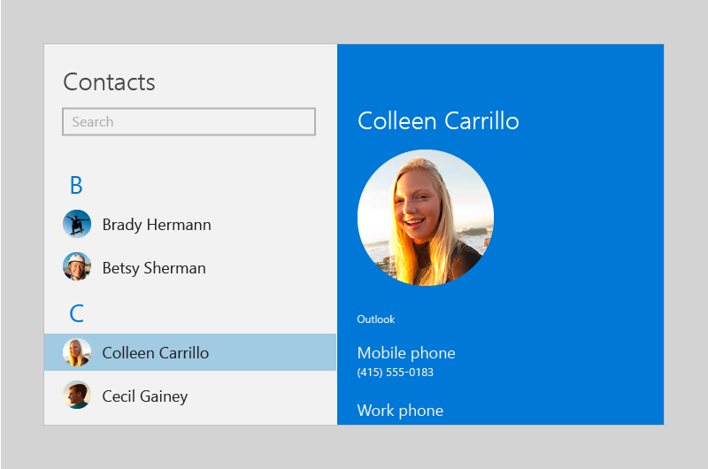

Person picture control
The person picture control displays the avatar image for a person, if one is available; if not, it displays the person's initials or a generic glyph. You can use the control to display a Contact object, an object that manages a person's contact info, or you can manually provide contact information, such as a display name and profile picture.
Here are two person picture controls accompanied by two text block elements that display the users' names.
Is this the right control?
Use the person picture when you want to represent a person and their contact information. Here are some examples of when you might use the control:
- To display the current user
- To display contacts in an address book
- To display the sender of a message
- To display a social media contact
The illustration shows the person picture control in a list of contacts:

Create a person picture
- Important APIs: PersonPicture class
The WinUI 3 Gallery app includes interactive examples of most WinUI 3 controls, features, and functionality. Get the app from the Microsoft Store or get the source code on GitHub
To create a person picture, you use the PersonPicture class. This example creates a PersonPicture control and manually provides the person's display name, profile picture, and initials:
<PersonPicture
DisplayName="Betsy Sherman"
ProfilePicture="Assets\BetsyShermanProfile.png"
Initials="BS" />
Using the person picture control to display a Contact object
You can use the person picture control to display a Contact object:
<Page
x:Class="SampleApp.PersonPictureContactExample"
xmlns="http://schemas.microsoft.com/winfx/2006/xaml/presentation"
xmlns:x="http://schemas.microsoft.com/winfx/2006/xaml"
xmlns:local="using:SampleApp"
xmlns:d="http://schemas.microsoft.com/expression/blend/2008"
xmlns:mc="http://schemas.openxmlformats.org/markup-compatibility/2006"
mc:Ignorable="d">
<StackPanel Background="{ThemeResource ApplicationPageBackgroundThemeBrush}">
<PersonPicture
Contact="{x:Bind CurrentContact, Mode=OneWay}" />
<Button Click="LoadContactButton_Click">Load contact</Button>
</StackPanel>
</Page>
using System;
using System.Collections.Generic;
using System.IO;
using System.Linq;
using System.Runtime.InteropServices.WindowsRuntime;
using Windows.Foundation;
using Windows.Foundation.Collections;
using Windows.UI.Xaml;
using Windows.UI.Xaml.Controls;
using Windows.UI.Xaml.Controls.Primitives;
using Windows.UI.Xaml.Data;
using Windows.UI.Xaml.Input;
using Windows.UI.Xaml.Media;
using Windows.UI.Xaml.Navigation;
using Windows.ApplicationModel.Contacts;
namespace SampleApp
{
public sealed partial class PersonPictureContactExample : Page, System.ComponentModel.INotifyPropertyChanged
{
public PersonPictureContactExample()
{
this.InitializeComponent();
}
private Windows.ApplicationModel.Contacts.Contact _currentContact;
public Windows.ApplicationModel.Contacts.Contact CurrentContact
{
get => _currentContact;
set
{
_currentContact = value;
PropertyChanged?.Invoke(this,
new System.ComponentModel.PropertyChangedEventArgs(nameof(CurrentContact)));
}
}
public event System.ComponentModel.PropertyChangedEventHandler PropertyChanged;
public static async System.Threading.Tasks.Task<Windows.ApplicationModel.Contacts.Contact> CreateContact()
{
var contact = new Windows.ApplicationModel.Contacts.Contact();
contact.FirstName = "Betsy";
contact.LastName = "Sherman";
// Get the app folder where the images are stored.
var appInstalledFolder =
Windows.ApplicationModel.Package.Current.InstalledLocation;
var assets = await appInstalledFolder.GetFolderAsync("Assets");
var imageFile = await assets.GetFileAsync("betsy.png");
contact.SourceDisplayPicture = imageFile;
return contact;
}
private async void LoadContactButton_Click(object sender, RoutedEventArgs e)
{
CurrentContact = await CreateContact();
}
}
}
Note
To keep the code simple, this example creates a new Contact object. In a real app, you'd let the user select a contact or you'd use a ContactManager to query for a list of contacts. For info on retrieving and managing contacts, see the Contacts and calendar articles.
Determining which info to display
When you provide a Contact object, the person picture control evaluates it to determine which info it can display.
If an image is available, the control displays the first image it finds, in this order:
- LargeDisplayPicture
- SmallDisplayPicture
- Thumbnail
You can change which image is chosen by setting the PreferSmallImage property to true; this gives the SmallDisplayPicture a higher priority than LargeDisplayPicture.
If there isn't an image, the control displays the contact's name or initials; if there's isn't any name data, the control displays contact data, such as an email address or phone number.
UWP and WinUI 2
Important
The information and examples in this article are optimized for apps that use the Windows App SDK and WinUI 3, but are generally applicable to UWP apps that use WinUI 2. See the UWP API reference for platform specific information and examples.
This section contains information you need to use the control in a UWP or WinUI 2 app.
The PersonPicture control for UWP apps is included as part of WinUI 2. For more info, including installation instructions, see WinUI 2. APIs for this control exist in both the Windows.UI.Xaml.Controls and Microsoft.UI.Xaml.Controls namespaces.
- UWP APIs: PersonPicture class, Contact class, ContactManager class
- WinUI 2 Apis: PersonPicture class
- Open the WinUI 2 Gallery app and see PersonPicture in action. The WinUI 2 Gallery app includes interactive examples of most WinUI 2 controls, features, and functionality. Get the app from the Microsoft Store or get the source code on GitHub.
We recommend using the latest WinUI 2 to get the most current styles, templates, and features for all controls.
To use the code in this article with WinUI 2, use an alias in XAML (we use muxc) to represent the Windows UI Library APIs that are included in your project. See Get Started with WinUI 2 for more info.
xmlns:muxc="using:Microsoft.UI.Xaml.Controls"
<muxc:PersonPicture />